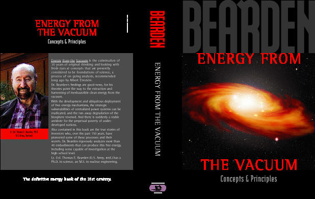

|
 |
6" x 9" |
|
Dr. Bearden’s findings are good news, for his theories point the way to the extraction and harnessing of inexhaustible clean energy from the vacuum. With the development and ubiquitous deployment of free-energy mechanisms, the strategic vulnerabilities of centralized power systems can be eradicated, and the run-away degradation of the biosphere reversed. And there is suddenly a viable antidote for the perpetual poverty of under-developed nations. Also contained in this book are the true stories of inventors who, over the past 150 years, have pioneered some of these processes—and their secrets. Dr. Bearden rigorously analyzes more than 40 embodiments that can produce this free energy, including some capable of investigation at the high-school level. Lt. Col. Thomas E. Bearden (U.S. Army, retired) has a Ph.D. in science, an M.S. in nuclear engineering, and a B.S. in mathematics. |